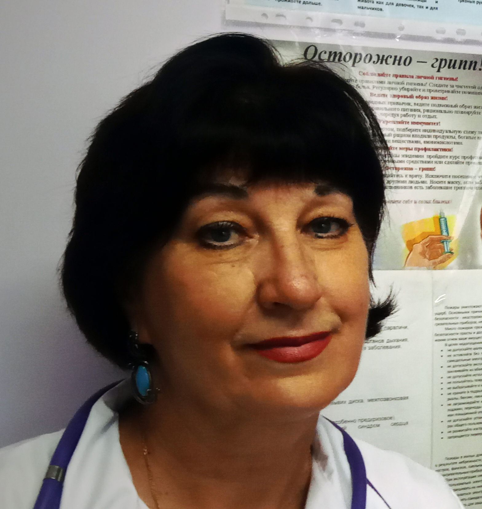

Возраст: 64
Место жительства: г. Лесосибирск
1974г. - окончила среднюю школу №25 п. Новоенисейск
1974 - 1976 гг. Медицинское училище БСМП (г. Красноярск)
1976-1978гг. Медсестра приемного покоя БСМП.
1979 - 1980гг. Лаборант кафедры госпитальной хирургии КрасГМИ.
1980 - 1986гг. Студент КрасГМИ (Лечебный факультет).
1986 - 1987гг. Врач интерн поликлиники №2 г. Лесосибирска.
с 1988г. работает врачом-терапевтом в поликлинике №2 г. Лесосибирска, дежурит в Лесосибирской МРБ. Высшая категория.
Отец: Василенко Николай Михайлович (07.08.1929 - 20.08.2004)
Мать: Василенко (Ступакова) Таисия Васильевна (25.09.1930 - 08.02.1996)
Брат: Василенко Юрий Николаевич (23.08.1949 - 1998)
Муж: Галинов Александр Максимович (27.07.1958)
Дочь: Герилович (Галинова) Людмила Александровна (24.06.1982)
Родилась: 21.01.1957. Отец: Василенко Николай Михайлович. Мать: Василенко (Ступакова) Таисия Васильевна.
Вышла замуж. Муж: Галинов Александр Максимович.
Родилась дочь: Герилович (Галинова) Людмила Александровна, 24.06.1982, г. Абакан. Отец: Галинов Александр Максимович.
. |